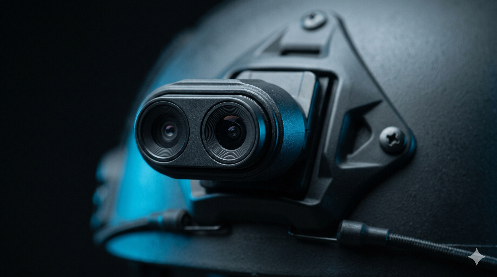
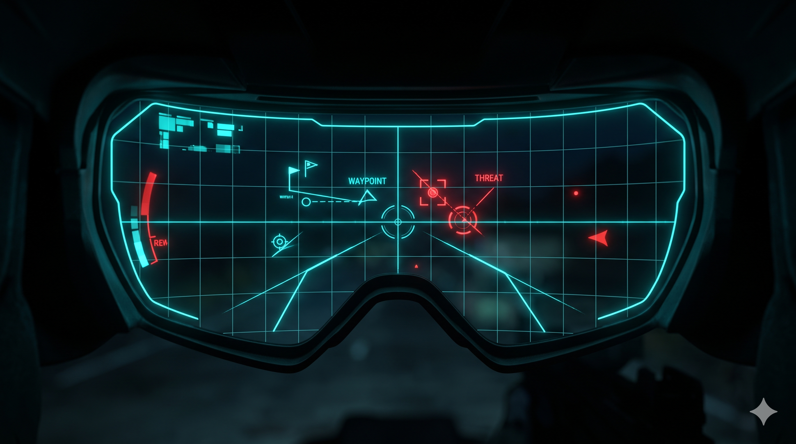
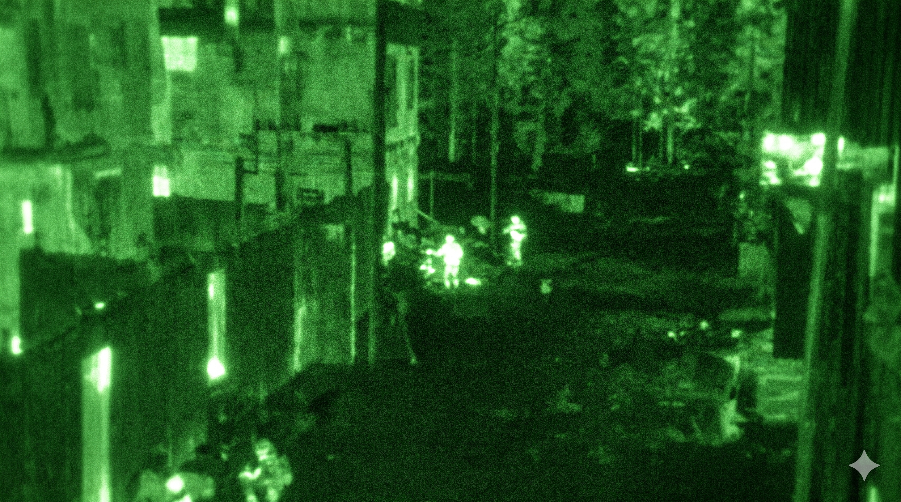
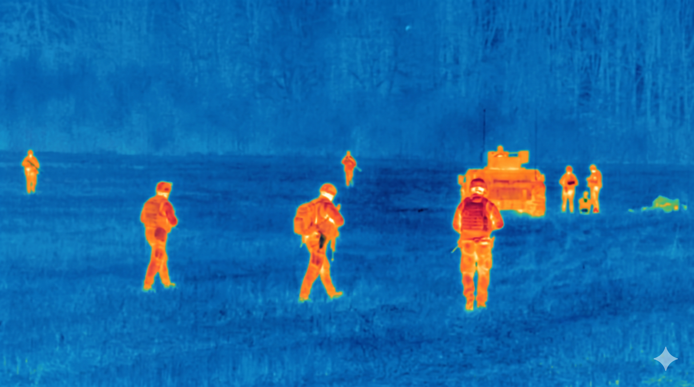
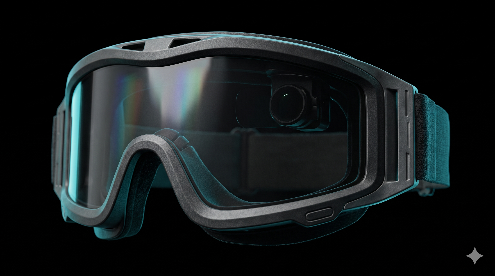
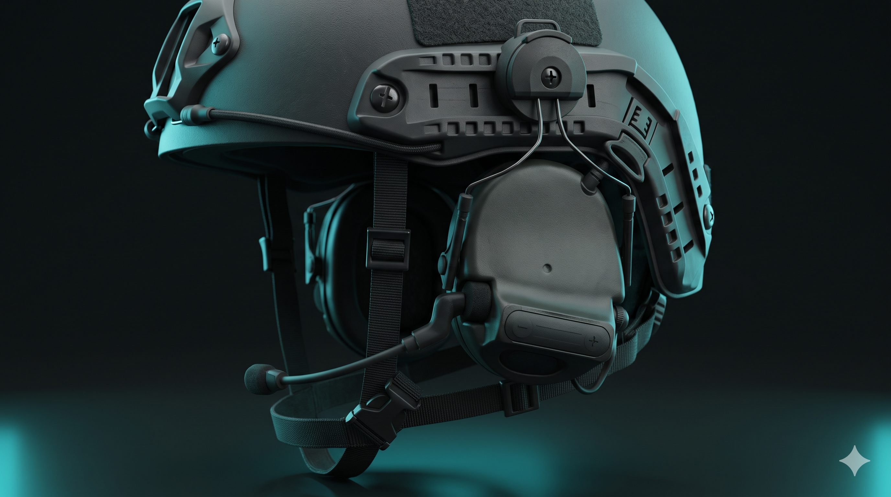
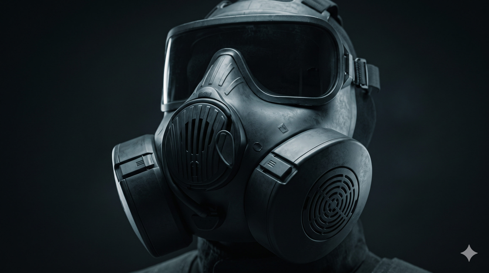
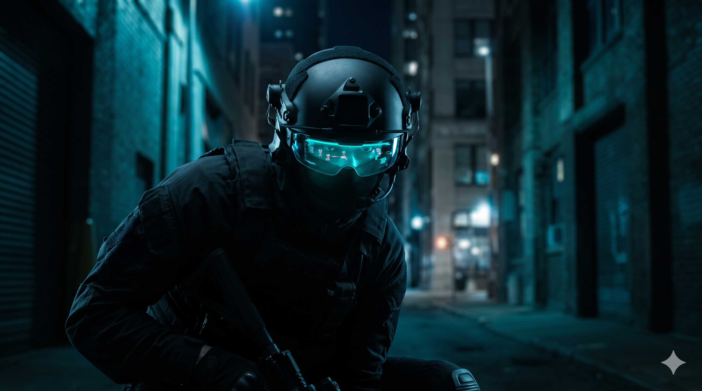
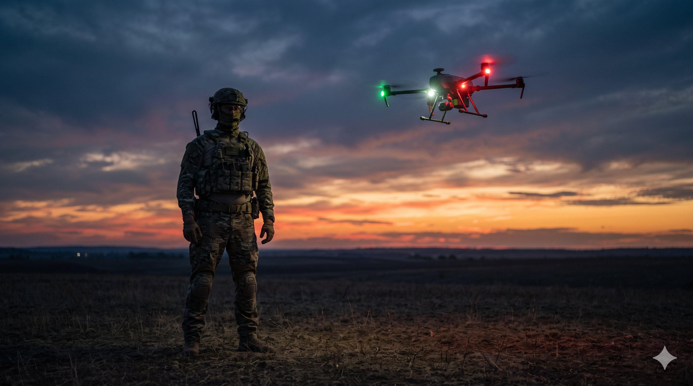
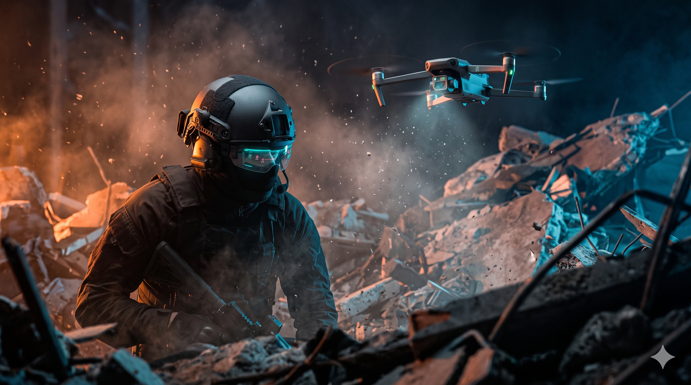

02 — Kara Sistemleri
UMAY
ŞAHİN GÖZ — sahadaki ekipler için gerçek zamanlı durumsal farkındalık ve karar destek sistemi. Edge AI · AR/HUD · Drone entegrasyonu.
Gerçek kahramanlar için saha desteği
Tek bir ekosistemde tüm saha verisi.
UMAY; AR/HUD destekli kask, sensörler, kamera sistemleri, taşınabilir yapay zeka işlem birimi ve bağlantılı drone altyapısını tek bir ekosistemde birleştirir. Görüntü, ses, konum ve görev verilerini edge tabanlı yapay zeka ile işleyerek; internet bağlantısına bağımlı kalmadan sahada hızlı analiz, uyarı üretimi, ekip koordinasyonu ve olay takibi sağlar.
Gerçek zamanlı AI takip
Görüş alanında canlı durumsal farkındalık.
AR/HUD katmanı; tehditleri, ekip konumlarını ve AI uyarılarını operatörün görüş alanına gerçek zamanlı yansıtır. Düşük görüş koşullarında bile otonom nesne tespiti ve takip devreye girer.
Bileşen 01
Taktik Kask
UMAY'ın merkezi bileşeni olan taktik kask, çoklu sensör sistemlerini tek bir entegre platform altında birleştirir. Edge AI işlemcisi sayesinde ağ bağlantısı gerektirmeksizin tüm veriler yerelde analiz edilir.
- Çoklu sensör entegrasyonu — kamera, termal, NIR
- AR/HUD micro-display ile bilginin görüş alanına yansıtılması
- Edge AI işlemcisiyle bağımsız veri analizi
- Piyade sınıfı hafif ve dayanıklı kompozit kabuk
- Modüler takma/çıkarma mimarisi
Kask alt sistemleri
Entegre sensör modülleri

01
Kamera Sistemi
Çift lensli yüksek çözünürlüklü kamera dizisi, sürekli 360° çevresel görüntü akışı sağlar. Veri onboard AI'ye aktarılarak nesne tespiti ve sahne analizi yapılır.

02
AR Projeksiyon / HUD
Yarı saydam mikro-display; navigasyon verisi, takım konumları, tehdit işaretçileri ve AI uyarılarını görüş alanına gerçek zamanlı yansıtır.

03
Gece Görüşü
Aktif NIR (yakın kızılötesi) modülü, sıfır ışık koşullarında net monokrom görüntü sağlar. HUD ile entegre çalışır.

04
Termal Görüş
LWIR termal sensör; duman, toz ve düşük görüş koşullarında ısı imzalarını tespit eder. Gizlenmiş personeli belirlemede kritik avantaj.
Giyilebilir modüller
Koruma & iletişim katmanı

A
Taktik Gözlük
Balistik dereceli dayanıklı gözlük, AR projeksiyon optiğini barındırır. HUD modülüyle entegre çalışarak veri katmanını görüş alanına aktarır.

B
Taktik Kulaklık
Aktif gürültü önlemeli ve kemik iletim teknolojili kulaklık; yüksek gürültüde net ekip içi iletişim ve AI sesli uyarılar sağlar.

C
Koruyucu Maske
CBRN sınıfı maske, kirlenmiş ortamlarda solunum güvenliği sağlar. Entegre hava kalitesi sensörleri UMAY paneline veri aktarır.
Bileşen 02
Kontrol Ünitesi
Sağlam yapılı, taşınabilir edge AI hesaplama ünitesi operatörün üzerinde taşınacak şekilde tasarlanmıştır. Tüm sensör girdilerini yerelde işler — bulut bağımlılığını ortadan kaldırarak kask, drone ve ekip ağı arasındaki veri akışını yönetir.
- Sahaya özel sertleştirilmiş edge AI işlemci
- İnternet bağlantısı olmadan bağımsız analiz
- Kask, drone ve ekip ağıyla anlık veri senkronizasyonu
- Gerçek zamanlı uyarı üretimi ve olay kaydı
Görev senaryoları
UMAY sahada

Senaryo 01
Kentsel Keşif
Karmaşık kentsel ortamlarda UMAY'ın AR/HUD katmanı tehditleri ve ekip konumlarını gerçek zamanlı işaretler; düşük görüş koşullarında hızlı karar vermeyi sağlar.

Senaryo 02
Çevre Güvenliği
Drone ve kara sensörü verileri UMAY panelinde birleşerek ek personel ihtiyacı olmadan geniş çevrelerde 360° durumsal farkındalık sağlar.

Senaryo 03
Arama & Kurtarma
Termal ve NIR sensörler afet bölgesinde ısı imzalarını tespit ederken drone alanı yukarıdan haritalandırarak kurtarma ekiplerini hedeflere daha hızlı yönlendirir.
Saha için inşa edildi
Her saniye önemli olduğunda.
Diğer alan